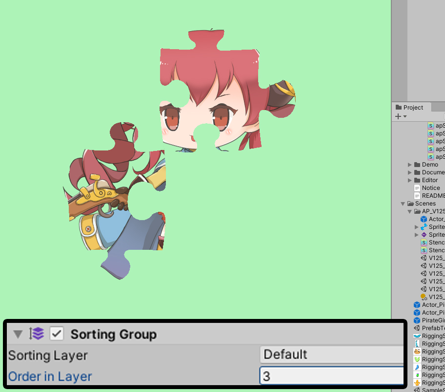

AnyPortrait > マニュアル > 「Sprite Mask」適用
「Sprite Mask」適用
1.2.5
Unityの「Sprite Mask（スプライトマスク）」を利用すれば、他のSprite Rendererの一部を隠しながらレンダリングを行うことができます。
- Sprite Mask （Unity公式マニュアル）
AnyPortraitで製作されたキャラクターは、Sprite Rendererではなく、「Mesh Renderer」で構成されるため、基本的には「Sprite Mask」の影響を受けません。
しかし、単純にシェーダを作成して「Sprite Mask」を適用することができます。
次のチュートリアルも一緒に読んでみてことをお勧めします。
- マテリアルライブラリ
- メッシュ用シェーダ(Shader)
- カスタムシェーダー

「Sprite Mask」を生成してみましょう。
(1) 「Sprite Mask」として使用する画像を用意して「Sprite」タイプに設定します。
(2) 「Hierarchy」で右クリックをして、Sprite Maskを選択します。

(1) 新たな「Sprite Mask」が生成されました。
(2) 準備した画像を「Sprite Mask」に適用します。
基本的には「Sprite Mask」は、「シーンビュー（Scene View）」で見えません。
(3) シーンビューで表示される情報の中から、「Sprite Mask」が含まれるようになります。
(4) 「Sprite Mask」がシーンビューに表示されます。

シェーダ（Shader）を新たに作成してみましょう。
AnyPortraitの1つの「マテリアルセット（Material Set）」には、複数のシェーダが含まれるが、ここでは最も多く使用される2つのシェーダだけを変更してみましょう。
（1つの「マテリアルセット」で「カラースペース（Color Space） 」1つに含まれているシェーダは、合計9個なので、しっかりとするためには、9つのシェーダファイルの両方を変更する必要があります。）
(1) 基本的なシェーダーが配置「Assets ＆RC AnyPortrait ＆RC Assets ＆RC Shaders」フォルダから次の二つのシェーダアセットを複製します。
- apShader_Transparent : アルファブレンディングとなる基本的なシェーダー（ガンマカラースペース）
- apShader_ClippedWithMask : クリッピングメッシュに適用されるアルファブレンディングとなる基本的なシェーダー（ガンマカラースペース）
(2) 複製されたシェーダアセットの名前を次のように変えてみました。
- apShader_Transparent > Stencil_Transparent
- apShader_ClippedWithMask > Stencil_Clipped
まず、「Stencil_Transparent」シェーダアセットを開いてみましょう。
（「カスタムシェーダ」を作成する方法については、「関連ページ」を確認してみてください。）
(1) 「シェーダーの名前」を変更します。区分しやすい名前に設定します。
(2) 「Stencilコード」を追加します。
Stencil
{
Ref 1
Comp LEqual
}
「Sprite Mask」は、「Stencil」を利用するので、「Sprite Renderer」がなくてもマスキングが可能です。

同じように、「Stencil_Clipped」シェーダアセットを変更します。
「名前」を変更し、「Stencilコード」を追加してください。

作成されたシェーダアセットをキャラクターに適用してみましょう。
(1) AnyPortraitエディタを開いて、「Material Libraryボタン」を押して「マテリアルライブラリ」を開きます。
(2) 現在適用され、「マテリアルセット」を選択した場合、
(3) この「マテリアルセット」で使用されてシェーダを見ることができます。

これを修正した「Stencilシェーダアセット」に交換してみましょう。
(1) まず、「Color Space : Gamma > Basic Rendering > Alpha Blend」のシェーダを
(2) 「Stencil_Transparent」に交換します。

同じようにクリッピングシェーダも交換します。
(1) 「Color Space : Gamma > Clipped Rendering > Alpha Blend」のシェーダを
(2) 「Stencil_Clipped」に交換します。

「マテリアルライブラリ」を閉じ、Bakeを実行します。

Unityシーンから見れば「Sprite Mask」だけ見せキャラクターは見えないことがあります。
ゲームを実行してみましょう。
ゲームを実行してみると「Sprite Mask」のイメージだけキャラクターが表示されるのを見ることができます。
「Sprite Mask」領域を除いてレンダリング
逆に「Sprite Mask」領域が非表示になって、それ以外の領域のみをレンダリングするように作られてみましょう。

先に作成した「Stencil_Transparent」、「Stencil_Clipped」アセットを一つずつ開いてコードを変更します。
「Stencilの比較演算子」を「Comp LEqual」の反対である「Comp Greater」に変更します。

再度ゲームを実行してみると、以前の結果と対照的に、「Sprite Mask」の領域を除いた残りがレンダリングになることを見ることができます。
「Sprite Mask」の「Custom Range」を使用する
「Sprite Mask」の「Custom Range」という名前のプロパティを使用して、指定された「Sorting Layer」や「Sorting Order」の対象にのみ適用を受けるようにすることができます。
テストのために、新しい「Sprite Mask」を生成してみました。
二つの「Sprite Mask」が同時に適用されたことを見ることができます。

(1) 最初の「Sprite Mask」を選択します。
(2) 「Custom Range」をチェックしたあと、「FrontのOrder in Layer」を「5」、「BackのOrder in Layer」を「0」に設定します。
(3) 第二「Sprite Mask」を選択します。
(4) 「Custom Range」をチェックしたあと、「FrontのOrder in Layer」を「15」、「BackのOrder in Layer」を「10」に設定します。

AnyPortraitで作ったキャラクターの「Sorting Order」を制御するために「Sorting Group」を利用してみましょう。
(1) AnyPortraitで作ったキャラクターや、またはその上位のGameObjectを選択します。
(2) 「Add Component」ボタンを押して、「Sorting Group」を追加します。

「Sorting Order Option」を「Depth To Order」に変更します。
今「Sorting Group」を利用して、いくつかの「Sprite Mask」が適用されるかを設定することができます。

「Sorting Group」の「Order in Layer」の値を「3」に設定すると、最初のマスクにのみ影響を受けます。

「Sorting Group」の「Order in Layer」の値を「13」に設定すると、第二のマスクにのみ影響を受けます。
参考
「Sorting Group」を使用せずにAnyPortraitの「Sorting Order Option」を「Set Order」モードに設定した状態でも同じように、この操作を実行することができます。